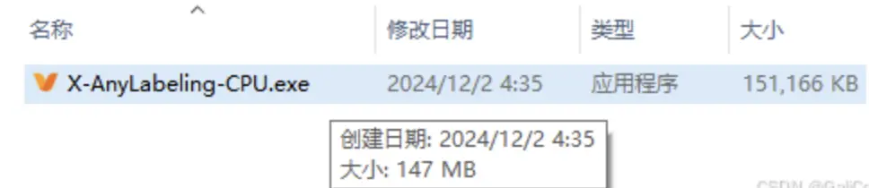
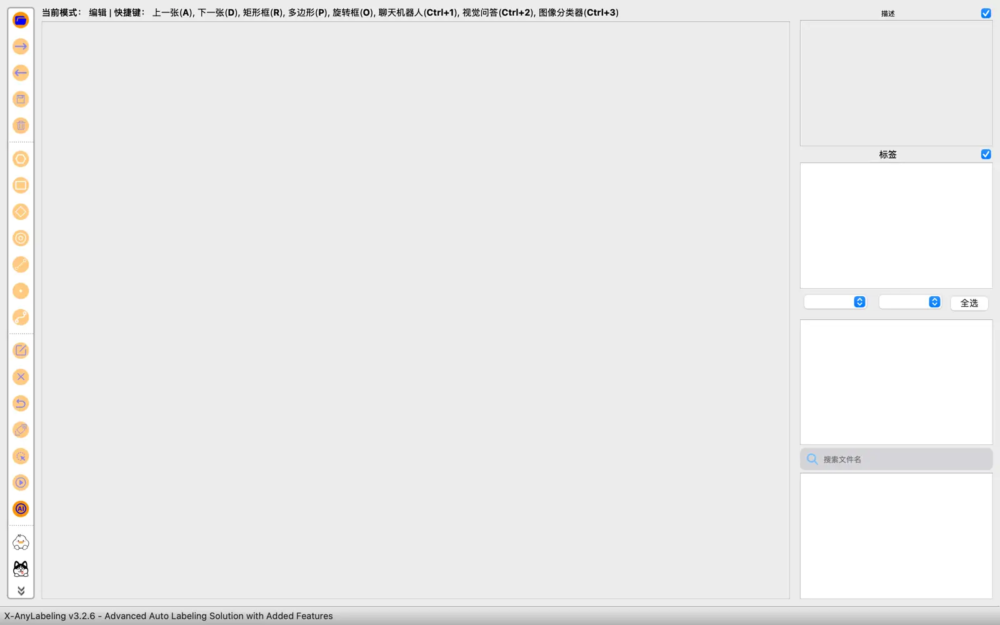
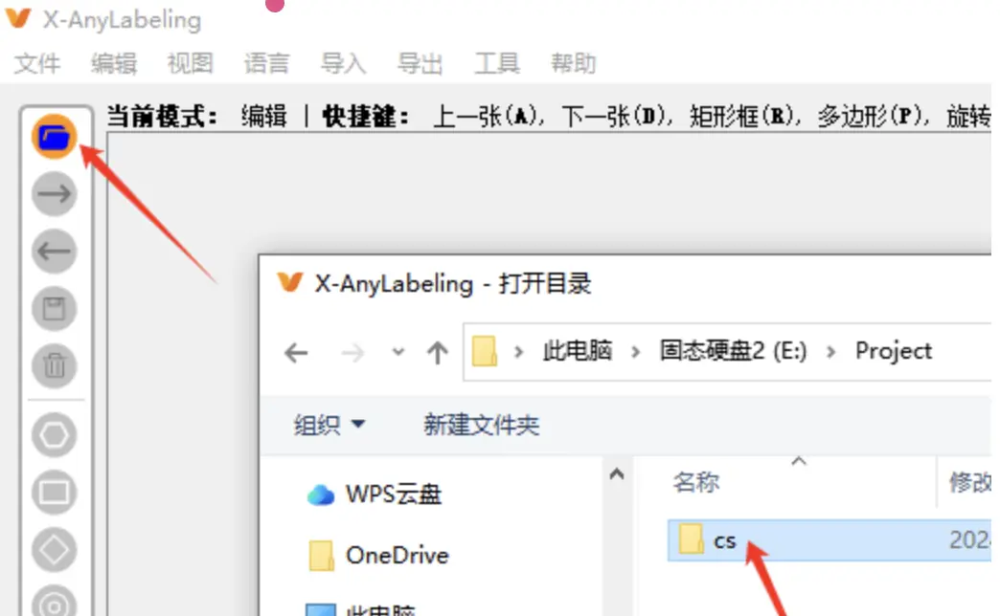
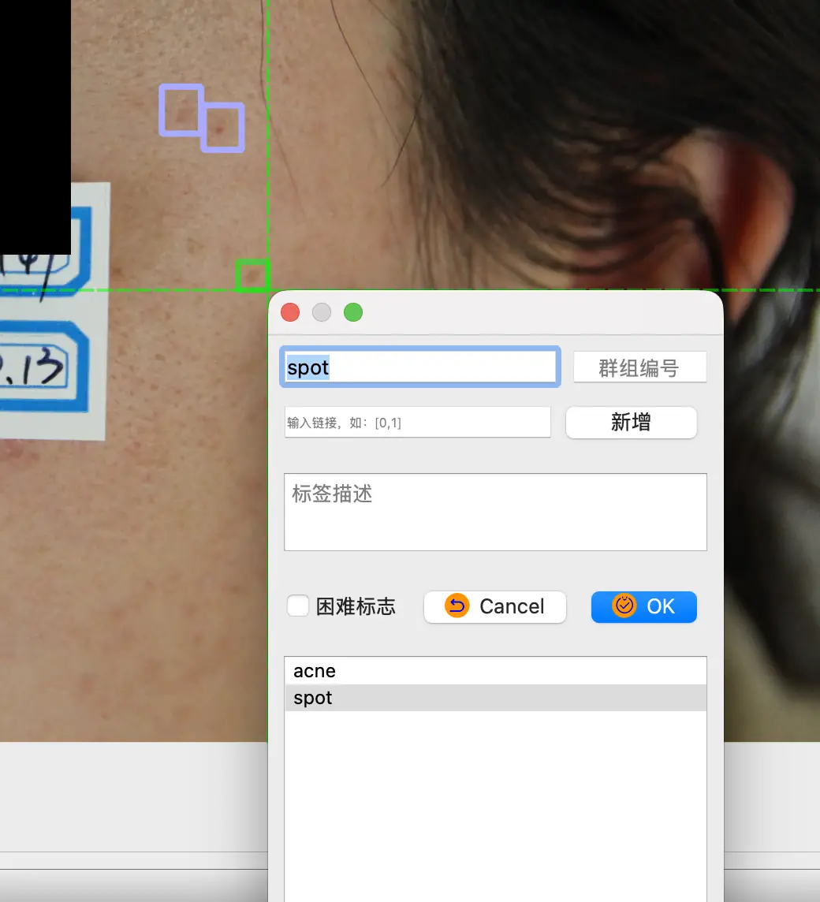
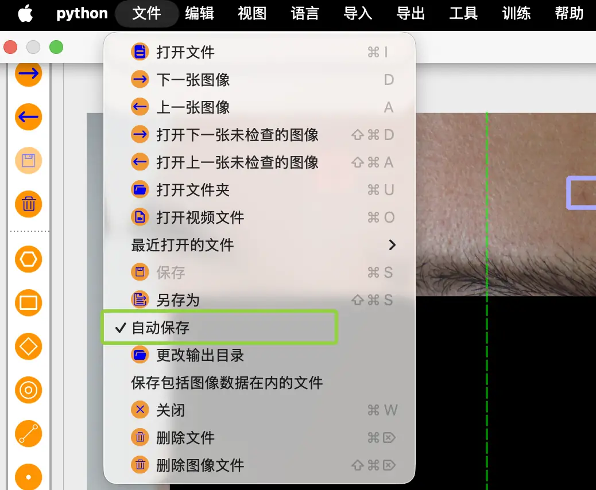
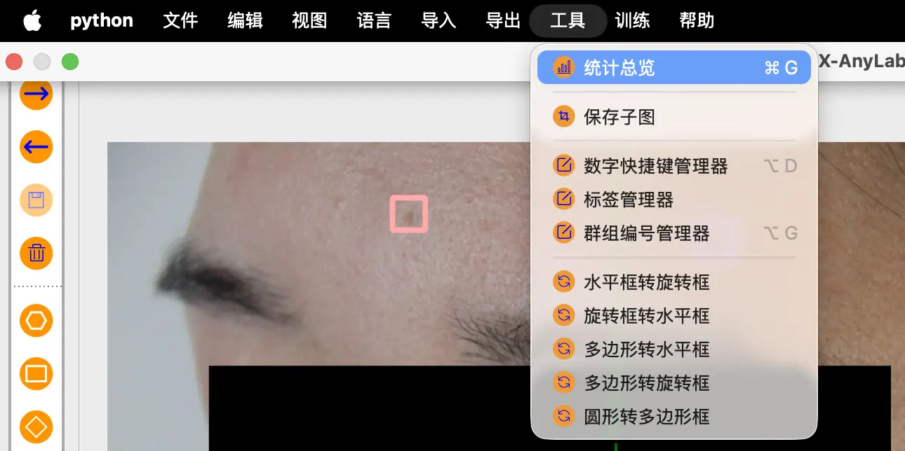
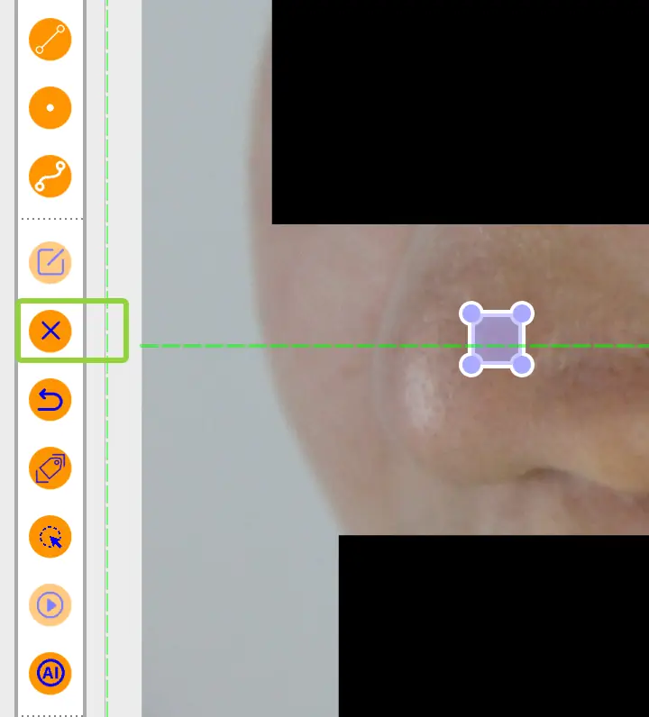
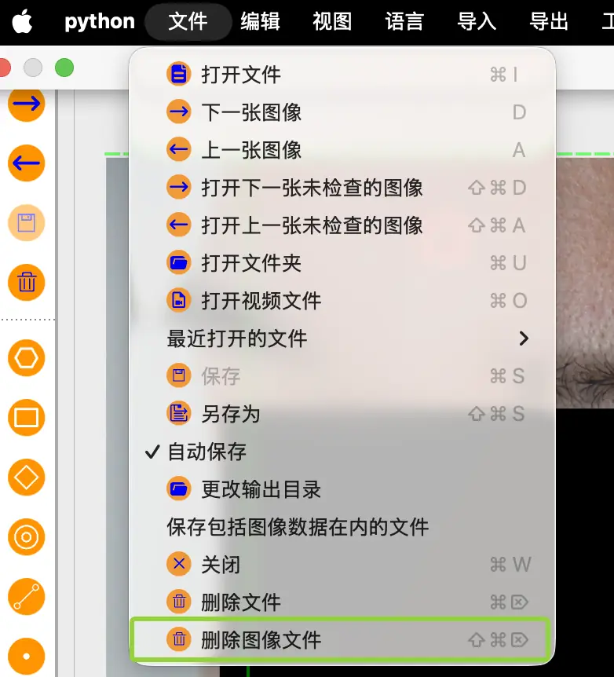

X-AnyLabeling 标注工具使用记录
posted @ 2026-04-22 墨玉 分区: 造船
记录自动标注工具的安装、模型配置和常见问题处理。
X-AnyLabeling 标注工具
安装X-AnyLabeling 对于所给的exe软件无需安装，双击打开直接用。

打开界面如下：
导入图片，打开图片所在文件夹
按快捷键【R】开始绘制矩形框，左上角和右下角各点一下，然后在弹框中输入对象的类别。
X-AnyLabeling默认开启自动保存功能，在初次启动界面时，可点击菜单栏的【文件】下拉框查看【自动保存】选项是否被勾选。
按住【Ctrl键】滑动鼠标滚轮，可以对图片进行缩放。 快键键【A】上一张，【D】下一张。 标注完会自动保存同名的.json标签描述文件，与打开的图片文件夹在同一级。下次打开该文件夹会自动读取标签。 点击左上角【工具】查看【统计总览】，可以看到标签的数量分布情况。
删除图片或标签。 删除标签，选中矩形框，点击界面左侧的x号。
删除图片，在【文件】下，点击【删除图像文件】。
对于删除也有快捷键，删除标签文件（Ctrl+Delete），图片删除文件（Ctrl+Shift+Delete）。